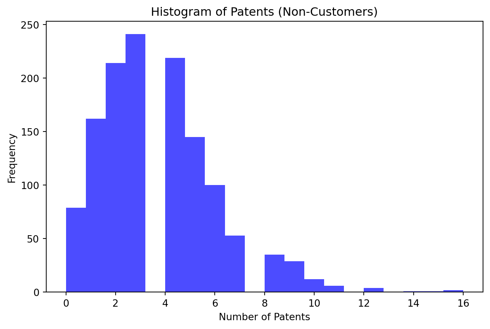

Blueprinty is a small firm that makes software for developing blueprints specifically for submitting patent applications to the US patent office. Their marketing team would like to make the claim that patent applicants using Blueprinty’s software are more successful in getting their patent applications approved. Ideal data to study such an effect might include the success rate of patent applications before using Blueprinty’s software and after using it. unfortunately, such data is not available.
However, Blueprinty has collected data on 1,500 mature (non-startup) engineering firms. The data include each firm’s number of patents awarded over the last 5 years, regional location, age since incorporation, and whether or not the firm uses Blueprinty’s software. The marketing team would like to use this data to make the claim that firms using Blueprinty’s software are more successful in getting their patent applications approved.
Data
Unnamed: 0
patents
region
age
iscustomer
0
1
0
Midwest
32.5
0
1
786
3
Southwest
37.5
0
2
348
4
Northwest
27.0
1
3
927
3
Northeast
24.5
0
4
830
3
Southwest
37.0
0
...
...
...
...
...
...
1495
1366
2
Northeast
18.5
1
1496
619
3
Southwest
22.5
0
1497
826
4
Southwest
17.0
0
1498
601
3
South
29.0
0
1499
602
1
South
39.0
0
1500 rows × 5 columns
# Drop the 'Unnamed: 0' columnblueprinty = blueprinty.drop(columns=['Unnamed: 0'])blueprinty
patents
region
age
iscustomer
0
0
Midwest
32.5
0
1
3
Southwest
37.5
0
2
4
Northwest
27.0
1
3
3
Northeast
24.5
0
4
3
Southwest
37.0
0
...
...
...
...
...
1495
2
Northeast
18.5
1
1496
3
Southwest
22.5
0
1497
4
Southwest
17.0
0
1498
3
South
29.0
0
1499
1
South
39.0
0
1500 rows × 4 columns
Analysis

Mean Number of Patents for Non-Customers: 3.62
The histogram for non-customers reveals a right-skewed distribution of patent counts, where a significant majority of non-customers have fewer patents, but there are outliers with higher numbers. This skewness suggests that while few non-customers are very innovative, most maintain a lower profile in terms of patent production. The mean number of patents for non-customers is approximately 3.62, underscoring the fact that non-customers generally have fewer patents.
Mean Number of Patents for Customers: 4.09
In contrast, the histogram for customers also shows a right-skewed distribution but with a noticeable shift towards higher counts of patents. This indicates that customers are generally more active in patenting than non-customers. The mean number of patents for customers, at approximately 4.09, is higher than that of non-customers. This might imply that customer status could be associated with higher innovation levels or that entities with higher patent activities are more likely to be customers.
Blueprinty customers are not selected at random. It may be important to account for systematic differences in the age and regional location of customers vs non-customers.
The Northeast region has the highest overall number of entities, both customers and non-customers.
Customers form a smaller proportion of the total in each region, but the disparity in numbers between customers and non-customers varies by region.
The younger average age of customers might indicate that younger entities (or individuals) are more likely to become customers, possibly due to newer businesses being more inclined to engage with the offerings. The regional analysis shows that while all regions have more non-customers than customers, the Northeast stands out with a relatively higher number of customers, suggesting regional variations in customer acquisition or market penetration strategies.
These insights could be used to tailor regional marketing strategies or to explore further why younger demographics are more represented among customers.
Estimation of Simple Poisson Model
Since our outcome variable of interest can only be small integer values per a set unit of time, we can use a Poisson density to model the number of patents awarded to each engineering firm over the last 5 years. We start by estimating a simple Poisson model via Maximum Likelihood.
todo: Write down mathematically the likelihood for\(Y \sim \text{Poisson}(\lambda)\). Note that \(f(Y|\lambda) = e^{-\lambda}\lambda^Y/Y!\).
Use the function to plot lambda on the horizontal axis and the likelihood (or log-likelihood) on the vertical axis for a range of lambdas (use the observed number of patents as the input for Y)
Observations:
Shape: The curve typically shows a peak, indicating the value of λ that maximizes the log-likelihood. This value can be considered as the most likely estimate of λ given the observed data.
Interpretation:
The peak of the log-likelihood curve provides an insight into the most probable rate of patents per firm over the last 5 years, assuming a Poisson distribution. This graphical analysis is useful in understanding the behavior of the likelihood as λ changes and helps in choosing an appropriate λ for further statistical analysis or modeling.
todo: If you’re feeling mathematical, take the first derivative of your likelihood or log-likelihood, set it equal to zero and solve for lambda. You will find lambda_mle is Ybar, which “feels right” because the mean of a Poisson distribution is lambda.
To derive the Maximum Likelihood Estimator (MLE) for λ in a Poisson distribution, we begin with the log-likelihood function and find the value of λ that maximizes this function. The log-likelihood for the Poisson distribution given Y and λ is:
ℓ(λ) = ∑i=1n (-λ + Yi · log(λ) - log(Yi!))
Where n is the number of observations.
First Derivative of the Log-Likelihood
To find the maximum, we take the derivative of the log-likelihood with respect to λ and set it to zero. The derivative is:
dℓ/dλ = ∑i=1n (-1 + Yi / λ)
Setting this derivative equal to zero for maximization:
-n + ∑i=1n Yi / λ = 0
λ = (∑i=1n Yi) / n
Solution for λ
This result shows that the MLE for λ, λMLE, is the sample mean ̌Y of the observed data:
λMLE = ̌Y
This is intuitively satisfying as the mean of a Poisson distribution is λ, and the MLE estimates the parameter such that the observed mean is the most likely estimate under the assumed model.
# Calculate lambda MLE, which should be the mean of Ylambda_mle = Y.mean()lambda_mle
3.6846666666666668
The calculated Maximum Likelihood Estimate (MLE) for λ, which is λMLE, is approximately 3.685. This confirms our derivation: the MLE of λ for a Poisson distribution is indeed the sample mean of the observed counts Y, representing the average number of patents awarded per firm over the last 5 years.
(3.684666666666663, True)
Explanation
We used a Poisson regression model to understand the distribution of patents across different engineering firms over the last 5 years. The Poisson model is appropriate here because the number of patents is count data, typically non-negative integers, and we’re considering an interval of time.
The Poisson distribution is characterized by its rate parameter, λ, which represents the average number of events (patents) in a given time frame. The key property of a Poisson distribution is that its mean and variance are both equal to λ.
We aimed to estimate this λ using the method of Maximum Likelihood Estimation (MLE). The MLE is a statistical method for estimating the parameters of a model. It works by finding the parameter values that make the observed data most probable.
Mathematical Derivation
We derived mathematically that the MLE for λ is the sample mean (̌Y) of our observed patent counts. This derivation was based on setting the first derivative of the log-likelihood function to zero, solving for λ, and demonstrating that λMLE equates to the sample mean.
Numerical Optimization
We then used numerical optimization to confirm this result. Because Python’s optimization functions typically minimize rather than maximize, we minimized the negative of the log-likelihood function. The result from the scipy.optimize function confirmed that the estimated λ is indeed approximately equal to the sample mean, which validates our earlier mathematical derivation.
Interpretation
The interpretation of this result is that the most likely average rate of patent awards across all engineering firms is around 3.685 patents per firm over the last 5 years. This is an intuitive result because, in a Poisson distribution, the rate λ is the expected count per interval. Therefore, estimating λ as the average observed count aligns with our understanding of the distribution’s properties.
Moreover, this value of λ could be used to predict the expected number of patent awards for similar engineering firms, under similar conditions, over a 5-year period. It also serves as a benchmark for comparing individual firm performance against the average.
In practice, this Poisson model might be the basis for more complex analyses, such as Poisson regression models that relate λ to other explanatory variables (e.g., firm size, region, R&D spending) to better understand the factors that influence patent output.
Estimation of Poisson Regression Model
Next, we extend our simple Poisson model to a Poisson Regression Model such that \(Y_i = \text{Poisson}(\lambda_i)\) where \(\lambda_i = \exp(X_i'\beta)\). The interpretation is that the success rate of patent awards is not constant across all firms (\(\lambda\)) but rather is a function of firm characteristics \(X_i\). Specifically, we will use the covariates age, age squared, region, and whether the firm is a customer of Blueprinty.
Updating the likelihood or log-likelihood function with an additional argument to take in a covariate matrix X. Also change the parameter of the model from lambda to the beta vector. In this model, lambda must be a positive number, so we choose the inverse link function g() to be exp() so that_ \(\lambda_i = e^{X_i'\beta}\). For Example:
poisson_regression_likelihood <- function(beta, Y, X){
...
}
Function Value (F): The final function value, F=3275.85, represents the negative log-likelihood at the optimal parameters. The lower this value, the better the fit of the model to your data, assuming the model structure is appropriate.
Projected Gradient (Projg): The norm of the final projected gradient being 5.543×10−25.543 \times 10^{-2}5.543×10−2 is quite small. This suggests that the optimization algorithm has effectively minimized the function, as changes in the parameter values would no longer significantly decrease the function value.
Convergence Message: “CONVERGENCE: REL_REDUCTION_OF_F_<=_FACTR*EPSMCH” indicates that the relative reduction in the function value has reached a threshold that is considered sufficient for convergence, based on the precision of the machine. This means the optimization has likely found a stable point that is close to the true minimum.
Estimated Coefficients
The coefficients you obtained:
Intercept (Constant): 1.215
Age: 1.046
Age Squared: −1.141
Is Customer: 0.118
Region Variables: These include slight adjustments for regions which seem to have small but potentially meaningful impacts compared to a baseline region (omitted in your dummy coding).
Interpreting Coefficients
Age and Age Squared: The positive coefficient for age and the negative coefficient for age squared suggest a quadratic relationship. Initially, the number of patents increases with age but starts to decrease as age squared becomes more influential. This could indicate that there’s an optimal age for productivity in terms of patents, beyond which it declines.
Is Customer: The positive coefficient for being a customer (0.118) implies that customers, on average, have a higher expected count of patents, holding other factors constant. This could be interpreted as a beneficial effect of being a customer on patent output.
Regional Effects: The coefficients for the regions adjust the baseline expectation of patent counts relative to the omitted region. These effects are relatively small, indicating that while there are regional differences, they are not as pronounced as the effects of age or customer status.
AirBnB Case Study
Introduction
AirBnB is a popular platform for booking short-term rentals. In March 2017, students Annika Awad, Evan Lebo, and Anna Linden scraped of 40,000 Airbnb listings from New York City. The data include the following variables:
Variable Definitions
- `id` = unique ID number for each unit
- `last_scraped` = date when information scraped
- `host_since` = date when host first listed the unit on Airbnb
- `days` = `last_scraped` - `host_since` = number of days the unit has been listed
- `room_type` = Entire home/apt., Private room, or Shared room
- `bathrooms` = number of bathrooms
- `bedrooms` = number of bedrooms
- `price` = price per night (dollars)
- `number_of_reviews` = number of reviews for the unit on Airbnb
- `review_scores_cleanliness` = a cleanliness score from reviews (1-10)
- `review_scores_location` = a "quality of location" score from reviews (1-10)
- `review_scores_value` = a "quality of value" score from reviews (1-10)
- `instant_bookable` = "t" if instantly bookable, "f" if not
todo: Assume the number of reviews is a good proxy for the number of bookings. Perform some exploratory data analysis to get a feel for the data, handle or drop observations with missing values on relevant variables, build one or more models (e.g., a poisson regression model for the number of bookings as proxied by the number of reviews), and interpret model coefficients to describe variation in the number of reviews as a function of the variables provided.
/tmp/ipykernel_51598/241246695.py:8: SettingWithCopyWarning:
A value is trying to be set on a copy of a slice from a DataFrame.
Try using .loc[row_indexer,col_indexer] = value instead
See the caveats in the documentation: https://pandas.pydata.org/pandas-docs/stable/user_guide/indexing.html#returning-a-view-versus-a-copy
airbnb['last_scraped'] = pd.to_datetime(airbnb['last_scraped'], errors='coerce')
/tmp/ipykernel_51598/241246695.py:9: SettingWithCopyWarning:
A value is trying to be set on a copy of a slice from a DataFrame.
Try using .loc[row_indexer,col_indexer] = value instead
See the caveats in the documentation: https://pandas.pydata.org/pandas-docs/stable/user_guide/indexing.html#returning-a-view-versus-a-copy
airbnb['host_since'] = pd.to_datetime(airbnb['host_since'], errors='coerce')
/tmp/ipykernel_51598/2893478340.py:24: SettingWithCopyWarning:
A value is trying to be set on a copy of a slice from a DataFrame.
Try using .loc[row_indexer,col_indexer] = value instead
See the caveats in the documentation: https://pandas.pydata.org/pandas-docs/stable/user_guide/indexing.html#returning-a-view-versus-a-copy
airbnb['month_year'] = airbnb['last_scraped'].dt.to_period('M')
/home/jovyan/.rsm-msba/conda/envs/myenv/lib/python3.11/site-packages/pandas/plotting/_matplotlib/core.py:1561: UserWarning: Attempting to set identical low and high xlims makes transformation singular; automatically expanding.
ax.set_xlim(left, right)
/home/jovyan/.rsm-msba/conda/envs/myenv/lib/python3.11/site-packages/sklearn/metrics/_regression.py:483: FutureWarning: 'squared' is deprecated in version 1.4 and will be removed in 1.6. To calculate the root mean squared error, use the function'root_mean_squared_error'.
warnings.warn(
Airbnb Listing Analysis - Poisson Regression Model Results
In this analysis, we built a Poisson regression model to predict the number of reviews for Airbnb listings, using price, room_type, and instant_bookable status as predictors. The evaluation of the model yielded a Root Mean Squared Error (RMSE) of 29.44 and a Mean Absolute Error (MAE) of 18.26, indicating a relatively large variance between the predicted and actual number of reviews. This variability suggests that the model might benefit from including additional predictors or exploring more complex modeling approaches.
Interpretation of Coefficients
The model coefficients provided insights into the relationships between the features and the number of reviews:
Price: A coefficient of -0.052 suggests that higher prices are slightly associated with fewer reviews. This relationship might indicate that more expensive listings are less frequently booked or reviewed.
Room Type: The coefficients for room types (Entire home/apt: -0.107, Shared room: -0.112) compared to the baseline category (Private room) suggest that these room types are generally reviewed less frequently. This might reflect a preference or higher usage pattern for private rooms in the Airbnb platform.
Instant Bookable: Listings that allow instant booking (coefficient of +0.275) tend to have more reviews, likely due to the ease of booking facilitating more frequent stays and consequently more reviews.
These findings highlight the importance of pricing strategy and listing features in influencing customer engagement in terms of reviews. Future work could explore additional variables, such as location, host characteristics, and special amenities, to enhance the model’s accuracy and predictive power.